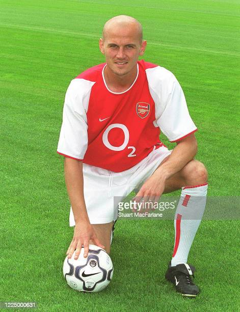
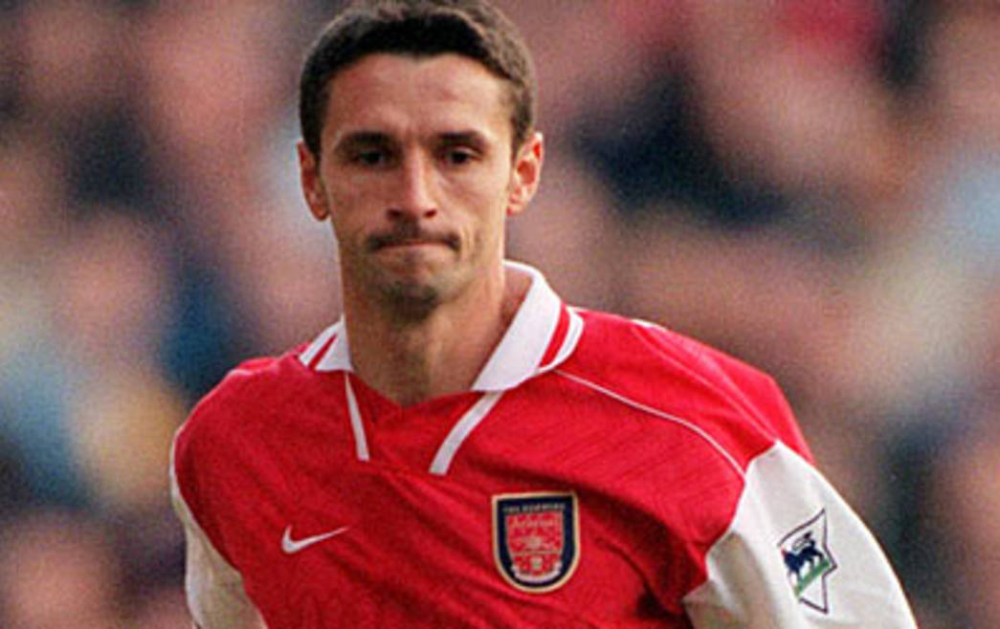
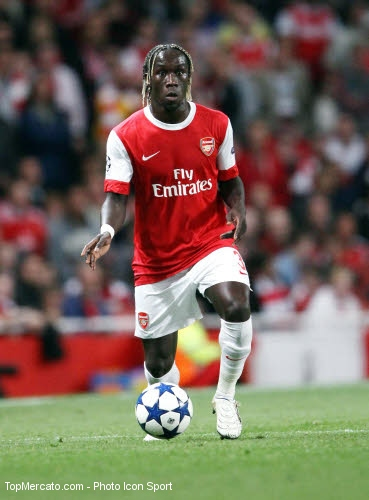
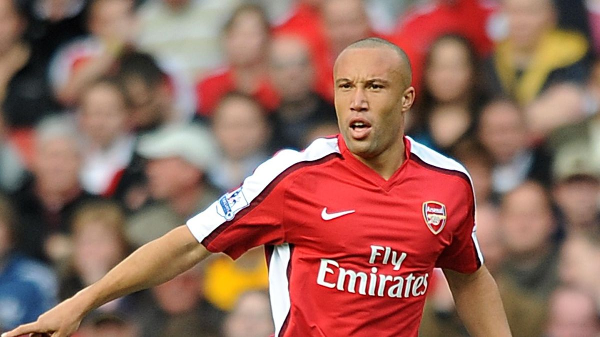
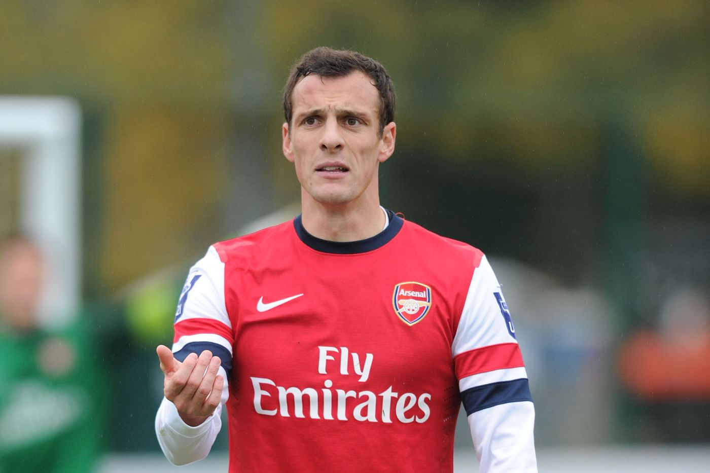

Mais il y a aussi les autres,ces joueurs aujourd'hui anonymes qui font parti de l'héritage français du club londonien

Pascal Cygan: Joueur d'Arsenal de 2002 à 2006, c'est un invincible méconnu

Rémi Garde: Joueur d'Arsenal de 1996 à 1999 c'est le premier joueur étranger à porter le brassard de capitaine des gunners

Gaël Clichy: Joueur d'Arsenal de 2003 à 2011, il a traversé toutes les époques de l'ère Wenger

Bacary Sagna: Joueur d'Arsenal de 2007 à 2014, il inscrit 5 buts

Mikael Silvestre: IL évolue dans le club de 2008 à 2010, sans grand succès

Sébastien Squillaci: De 2010 à 2013 il passe à travers de la période Wenger